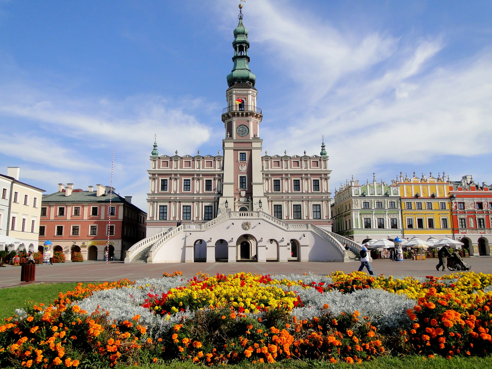
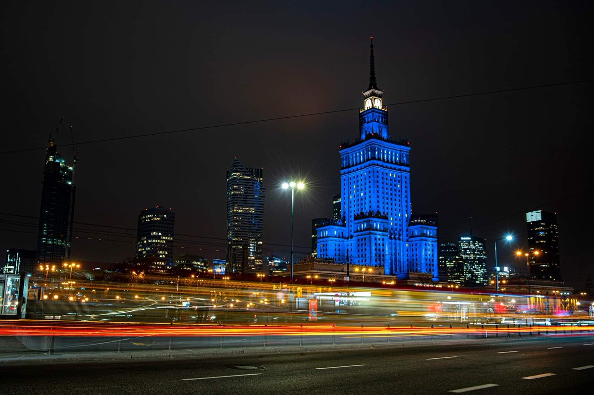
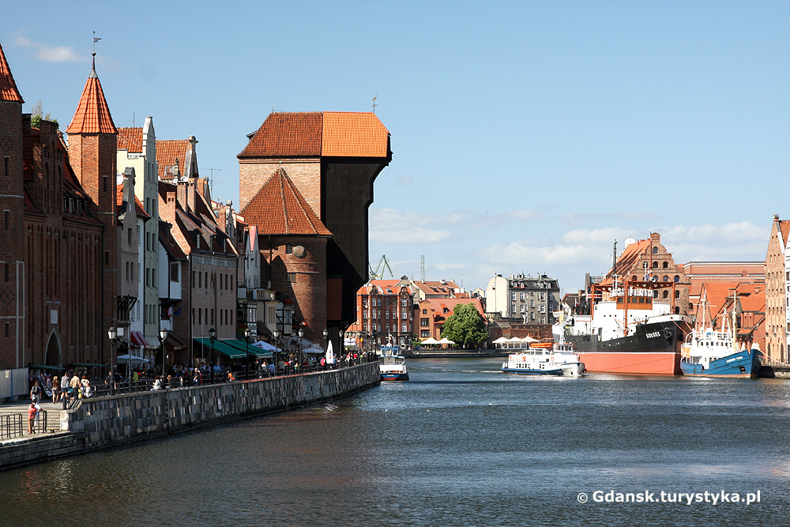
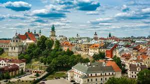
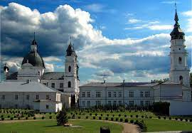
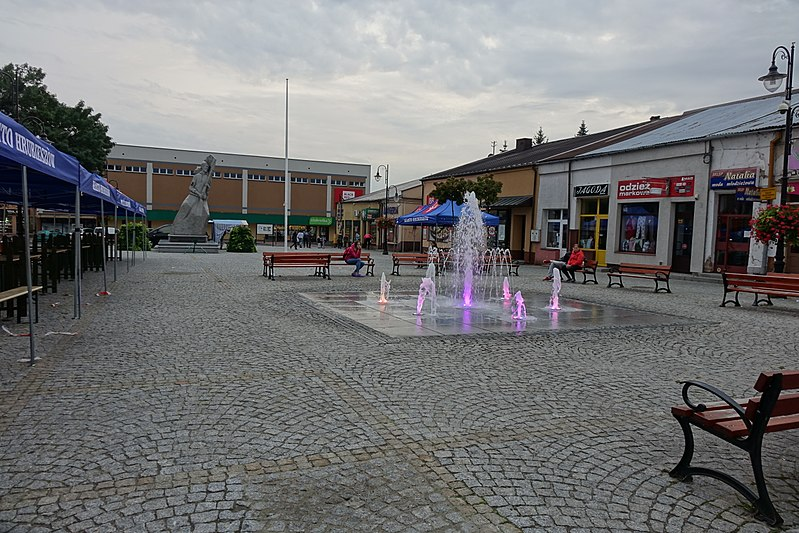

miasto na prawach powiatu w Polsce w południowej części województwa lubelskiego, siedziba władz powiatu zamojskiego i gminy Zamość. Jest jednym z większych ośrodków kulturalnych, edukacyjnych i turystycznych województwa, a zwłaszcza Zamojszczyzny. Za sprawą unikalnego zespołu architektoniczno-urbanistycznego Starego Miasta bywa nazywany „perłą renesansu”, „miastem arkad” i „Padwą północy”[2][3]. Pod względem liczby ludności zajmuje w województwie 2 miejsce (63 223 mieszkańców w czerwcu 2020 roku[1]), natomiast pod względem powierzchni plasuje się na 10. miejscu. W 1992 r. zamojskie Stare Miasto zostało wpisane na Listę Światowego Dziedzictwa UNESCO.

Warszawa
stolica Polski[4] i województwa mazowieckiego[5], największe miasto w kraju, położone w jego centralnej części[6], na Nizinie Środkowomazowieckiej, na Mazowszu, nad Wisłą.
Prawa miejskie uzyskała przed 1300[7]. W 1569 mocą unii lubelskiej Warszawa została ustanowiona miejscem obrad sejmów Rzeczypospolitej Obojga Narodów[a]. Od 1573 odbywały się tam wolne elekcje. Po 1596 do Warszawy przeniesiono dwór królewski i urzędy centralne, a w 1611 w rozbudowanym Zamku Królewskim na stałe zamieszkał król Zygmunt III Waza. Miejsce obrad sejmików generalnych województwa mazowieckiego i sejmików ziemskich ziemi warszawskiej od XVI wieku do pierwszej połowy XVIII wieku[8].
Warszawa jest największym miastem w Polsce pod względem liczby ludności i powierzchni[1]. Jest również jedynym polskim miastem, którego ustrój jest określony odrębną ustawą. Od 2002 jest gminą miejską mającą status miasta na prawach powiatu[9]. W jej skład wchodzi 18 jednostek pomocniczych – dzielnic m.st. Warszawy[10].
Warszawa jest ważnym ośrodkiem naukowym, kulturalnym, politycznym oraz gospodarczym. Tutaj znajdują się siedziby m.in. Prezydenta RP, Sejmu i Senatu, Rady Ministrów oraz Narodowego Banku Polskiego. Warszawa jest także siedzibą agencji Frontex, odpowiedzialnej za bezpieczeństwo granic zewnętrznych Unii Europejskiej, oraz Biura Instytucji Demokratycznych i Praw Człowieka (ODIHR), agendy OBWE.
Warszawa została wyróżniona Krzyżem Srebrnym Orderu Wojennego Virtuti Militari[11], Orderem Krzyża Grunwaldu I klasy[12][13], Krzyżem Niepodległości z mieczami[14] i Warszawskim Krzyżem Powstańczym[15].
W 2020 think tank Globalization and World Cities (GaWC), badający wzajemne stosunki pomiędzy miastami świata w kontekście globalizacji zaliczył Warszawę do kategorii Alpha-[16].

Gdańsk
miasto na prawach powiatu w północnej Polsce w województwie pomorskim, położone nad Morzem Bałtyckim u ujścia Motławy do Wisły nad Zatoką Gdańską. Centrum kulturalne, naukowe i gospodarcze oraz węzeł komunikacyjny północnej Polski, stolica województwa pomorskiego. Ośrodek gospodarki morskiej z dużym portem handlowym.
Gdańsk z 471 525 mieszkańcami[5] zajmuje szóste miejsce w Polsce pod względem liczby ludności, a siódme miejsce pod względem powierzchni – 263,44 km²[4]. Ośrodek aglomeracji trójmiejskiej, nazywaną też gdańską, wraz z Gdynią i Sopotem tworzą Trójmiasto.
Jest to miasto o ponadtysiącletniej historii, którego tożsamość na przestrzeni wieków kształtowała się pod wpływem różnych kultur. Gdańsk był również największym miastem Rzeczypospolitej Obojga Narodów, miastem królewskim i hanzeatyckim[9], posiadał prawo do czynnego uczestnictwa w akcie wyboru króla[10], w XVI w. był najbogatszym w Rzeczypospolitej[11]. Należał do terytorium miasta Gdańska, położony był w drugiej połowie XVI wieku w województwie pomorskim[12]. Miasto było też ważnym ośrodkiem kulturalnym. Gdańsk uznawany jest za symboliczne miejsce wybuchu II wojny światowej oraz początku upadku komunizmu w Europie Środkowej. Na terenie miasta znajdują się liczne zabytki architektury, działa w nim wiele instytucji i placówek kulturalnych.

Lublin
miasto na prawach powiatu we wschodniej Polsce, stolica województwa i powiatu lubelskiego, centralny ośrodek aglomeracji lubelskiej. Dziewiąte co do wielkości populacji miasto w Polsce, drugie w Małopolsce (339 547 mieszkańców w czerwcu 2020 roku[3]). Pod względem powierzchni szesnaste (147,45 km²).
Położone na Wyżynie Lubelskiej nad Bystrzycą, na dwóch odmiennych obszarach. Część zachodnia ma urozmaiconą rzeźbę terenu. Występują tam liczne wąwozy, doliny i wzgórza. Część wschodnia jest płaska. Lublin jest ulokowany ok. 170 km od Warszawy, nieopodal granicy krain historycznych: Małopolski i Rusi Czerwonej i ok. 100 km od przejścia granicznego z Ukrainą.
Osada handlowa, położona na szlaku prowadzącym z okolic Morza Czarnego, istniała w tym miejscu od VI w. Od X do XV w. Lublin należał do jednostki administracyjnej, której centrum był Sandomierz. W I Rzeczypospolitej był ważnym ośrodkiem administracyjnym, handlowym i kulturalnym. Od połowy XVII w. i w XVIII w. miasto podupadło i zubożało. W wyniku III rozbioru znalazło się w zaborze austriackim, następnie kolejno: w Księstwie Warszawskim i Królestwie Polskim. W 3. ćwierci XIX w. Lublin, włączony Koleją Nadwiślańską do rosyjskiej sieci kolejowej, szybko rozrósł się i nabrał charakteru przemysłowego. Zmienił się także jego kształt urbanistyczny. W pierwszej i drugiej wojnie światowej padł ofiarą gospodarki rabunkowej i Holokaustu. W okresie PRL nastąpił gwałtowny rozwój Lublina. W tym czasie ludność wzrosła ponad trzykrotnie. Umocnił się akademicki charakter miasta. Zbudowano szereg zakładów przemysłowych, wzniesiono nowe dzielnice mieszkaniowe.
Od 2004 przeprowadzane są liczne inwestycje z funduszy Unii Europejskiej. Miasto rozwija się jako ośrodek nauki, kultury, turystyki, sportu i rekreacji, a także usług i przemysłu. Umacnia się jako węzeł transportowy: posiada ekspresową obwodnicę w ciągu planowanej Via Carpathia oraz port lotniczy. Lublin jest członkiem Unii Metropolii Polskich, siedzibą instytucji samorządowych i państwowych, konsulatów, brygady litewsko-polsko-ukraińskiej, archidiecezji i metropolii Kościoła katolickiego oraz diecezji Kościoła prawosławnego.

Chełm
miasto na prawach powiatu we wschodniej Polsce, w województwie lubelskim. Leży 42 km od granicy z Białorusią i 27 km od granicy z Ukrainą w pobliżu przejścia granicznego w Dorohusku. Leży nad rzeką Uherką, lewym dopływem Bugu, jest trzecim co do liczby ludności miastem w województwie.
Chełm położony jest na terenie historycznej Rusi Czerwonej. Miasto królewskie lokowane w 1392 roku, do czasu rozbiorów położone w województwie ruskim[2]. Należało do starostwa chełmskiego w 1570 roku[3]. Chełm uzyskał prawo składu w 1541 roku[4]. Miasto rządowe Królestwa Kongresowego, położone było w 1827 roku w powiecie chełmskim, obwodzie krasnostawskim województwa lubelskiego[5]. Stolica historycznej ziemi chełmskiej, guberni chełmskiej, województwa chełmskiego 1975–1998 i kilkakrotnie powiatu.
Miasto wyróżnia się bogatą historią dawnego styku trzech kultur: polskiej, ruskiej i żydowskiej.
Według danych GUS z 30 czerwca 2020 r. Chełm liczył 61 588 mieszkańców[6].

Hrubieszów
miasto w południowo-wschodniej Polsce, w województwie lubelskim, siedziba powiatu hrubieszowskiego.
Według danych GUS z 31 grudnia 2019 r. Hrubieszów liczył 17 528 mieszkańców[1].
W okolicach miasta znajdują się liczne wczesnośredniowieczne cmentarzyska, kurhany i inne odkrycia archeologiczne (m.in. w Gródku, Masłomęczu i Kryłowie).

Kraków
miasto na prawach powiatu położone w południowej Polsce nad Wisłą, drugie co do liczby mieszkańców[1] i powierzchni miasto kraju[1], formalna stolica Polski do 1795 r. i miasto koronacyjne oraz nekropolia królów Polski, od 1000 r. nieprzerwanie stolica diecezji krakowskiej (jednej z pięciu w ówczesnej Polsce), a od 1925 archidiecezji i metropolii. Lokowany przed 1228 rokiem, ponownie w 1257 r.[5]. Od odzyskania niepodległości w 1918 r. miasto wojewódzkie (od 1998 r. siedziba władz województwa małopolskiego), jest także centralnym ośrodkiem metropolitalnym aglomeracji krakowskiej i Krakowskiego Obszaru Metropolitalnego. Kraków uznawany jest za stolicę historycznej Małopolski. Leży na obszarze Bramy Krakowskiej, Niecki Nidziańskiej i Pogórza Zachodniobeskidzkiego.
W Krakowie są główne siedziby m.in.: Polskiej Akademii Umiejętności, Narodowego Centrum Nauki, Instytutu Nafty i Gazu – Państwowego Instytutu Badawczego, Instytutu Zootechniki – Państwowego Instytutu Badawczego, Krajowej Szkoły Sądownictwa i Prokuratury[6], dowództwa Sił Specjalnych RP będącego jednocześnie jednym z kilku dowództw sił specjalnych NATO[7][8], Centrum Operacji Lądowych – Dowództwa Komponentu Lądowego[9], Polskiego Związku Narciarskiego[10], Operacyjno-Strategiczne Dowództwo Unii Europejskiej[11], Centrum Eksperckiego Kontrwywiadu NATO[12], Narodowe Centrum Radioterapii Hadronowej[13], Centralnego Ośrodka Turystyki Górskiej[14] i Instytut Ekspertyz Sądowych im. Prof. dra Jana Sehna w Krakowie[15].
W mieście działają placówki kulturalne o znaczeniu i statusie narodowym, m.in. Narodowy Stary Teatr, Muzeum Narodowe, Panteon Narodowy[16], Archiwum Narodowe[17], Biblioteka Jagiellońska, Instytut Książki[18], Instytut Literatury[19], Centrum Operacji Specjalnych[20], Narodowe Centrum Rugby[